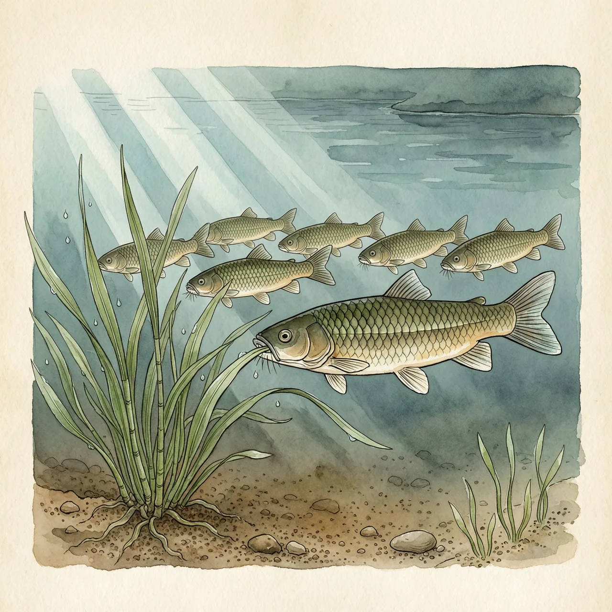
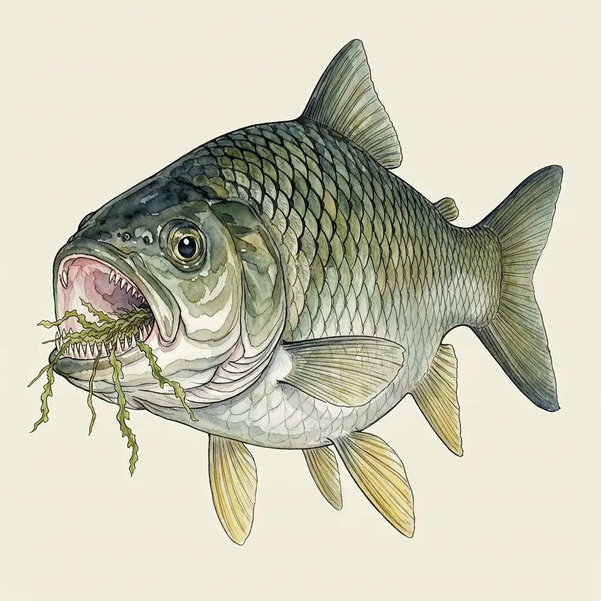

草鱼，原产中国各大江河水系至俄罗斯西伯利亚东部，体长可达1.5米。它的食谱随体长逐级转变，50毫米后完全转为草食，靠两排梳状咽头齿磨碎水草。因食草，新西兰与荷兰先后引进它控制水草，但它繁殖条件苛刻，多数引种地未能繁衍出自然种群。
草鱼待在河流、水库与湖泊的中下水层，水深5至30公尺，游得很快，常成群觅食。它体侧扁而延长，吻短口大、没有鬚，背部青褐略带黄，腹部乳白，鳞片大且带黑边，体长可达1.5公尺。原产地覆盖中国各大江河水系，向东延伸到俄罗斯西伯利亚东部——宽阔的水面与茂盛的水草，养得活一条长成后改吃草的鱼。早在十世纪，珠江三角洲以西的西江下游地区已经有了养殖草鱼的记录。
草鱼的吃草不是一开始就有的。体长15毫米左右，幼鱼吃底栖无脊椎动物；20毫米后开始啃植物的幼嫩部分和浮萍；30至32毫米改以周丛生物为主；到50至55毫米才完全转为草食，苦草、马来眼子菜这类沉水植物是正菜，象草、苏丹草、稗草和瓜类的叶、藤落进水里也吃。转换的底气在喉咙里：两排梳状的咽头齿，能把水草磨碾成浆。
草鱼被当作活的除草剂出口：1966年，新西兰引进它来控制水草，1973年荷兰照做。但这些引入大多没成——草鱼繁殖条件苛刻，据说需要江河里长距离的流水，水库和运河给不了，两个国家都没能繁衍出自然种群，也就没成为入侵物种；一些国家到今天只引进没有繁殖能力的三倍体个体。跟着它一起传遍世界的还有一句老话：草鱼胆能清肝明目。这句是错的，胆里有毒，生吃容易导致急性肝肾衰竭。
